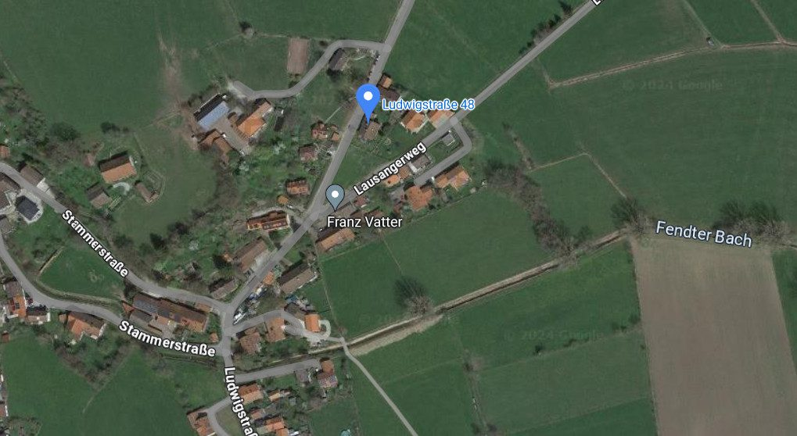

Termin & Anfahrt
Praxisinformation
Liebe Patientinnen und Patienten, wir möchten Sie darüber informieren, dass Dr. med. Barbara Tilmann ihre Praxistätigkeit derzeit vorübergehend aussetzen muss und in dieser Zeit leider nicht erreichbar ist. Aus diesem Grund können momentan keine Anfragen, Terminwünsche oder organisatorischen Anliegen bearbeitet werden.
Sobald es wieder möglich ist, sich bei der Praxis zu melden, können individuelle Anliegen besprochen und – sofern gewünscht – eine strukturierte Übergabe an andere Behandlerinnen und Behandler organisiert werden. Wir bitten Sie herzlich um Ihr Verständnis und Ihre Geduld in dieser besonderen Situation.
Sie erreichen die Praxis unter 08803 498 3010. Telefonisch erreichbar ist die Praxis von Montag bis Donnerstag in der Zeit von 9:00 bis 10:00 Uhr unter 0172 831 4441. In dringenden Fällen erreichen Sie mich ebenfalls mobil.
Auf dem offiziellen Praxistelefon können Sie eine Nachricht hinterlassen, falls Sie keine Möglichkeit haben, während der telefonischen Sprechzeit anzurufen. Ihre Anfrage per E-Mail mit der Angabe Ihrer Telefonnummer beantworte ich so zeitnah wie möglich.
Verbindlichkeit von Terminen
Mir ist Ihr Anliegen sehr wichtig. Dafür nehme ich mir sehr viel Zeit. Deshalb sind vereinbarte Termine für beide Seiten verbindlich. Falls bei Ihnen dennoch etwas dazwischenkommen sollte, ist es für meine Planung wichtig, dass längerfristig vereinbarte Termine rechtzeitig, nämlich eine Woche im Voraus, abgesagt werden. Kurzfristig vereinbarte Termine müssen zwei Werktage im Voraus abgesagt werden. Für nicht oder zu spät abgesagte Termine wird eine Gebühr erhoben, außer im Falle höherer Gewalt.
Terminanfrage per Formular
Sie können mir Ihr Anliegen auch über dieses Formular schicken. Bitte geben Sie eine Telefonnummer an, damit ich Sie zurückrufen kann.
Praxis: 82380 Peißenberg, Ludwigstraße 48
Der Ort Peißenberg liegt etwa 10 km südwestlich von Weilheim. Das Haus Ludwigstraße 48 befindet sich im Nordosten von Peißenberg. Der nahegelegene Bahnhof Peißenberg Nord ist nur 700 m vom Haus mit der Praxis entfernt.

Anfahrt mit dem Zug
Ab München Hauptbahnhof in Richtung Mittenwald, Umsteigen in Weilheim/Oberbayern Richtung Schongau. Peißenberg Nord ist die erste Haltestelle. Sie verlassen den Bahnhof und biegen direkt rechts auf die Ludwigstraße. Diese gehen Sie etwa 700 m bis zur Hausnummer 48, die sich auf der linken Straßenseite befindet.
Anfahrt mit dem Auto
Von Weilheim oder Schongau folgen Sie der Bundesstraße 472 bis zur Ausfahrt Peißenberg Ost. Dort biegen Sie ab und fahren nach Peißenberg hinein. An der ersten Ampel bei der Tankstelle fahren Sie rechts ab und gelangen so auf die Ludwigstraße. Diese fahren Sie etwa 1 km nach Norden bis zur Hausnummer 48, die sich auf der rechten Straßenseite befindet. Das Auto können Sie etwas oberhalb auf der linken Straßenseite parken.
Kontakt
- Praxis
- Ludwigstraße 48, 82380 Peißenberg
- Telefon
- 08803 498 3010
- Mobil
- 0172 831 4441
- Fax
- 08803 498 3020
- drbarbara@tilmann-chiron.com
Telefonische Sprechzeit: Montag bis Donnerstag, 9:00–10:00 Uhr. Die Mobilnummer erreichen Sie auch in dringenden Fällen.